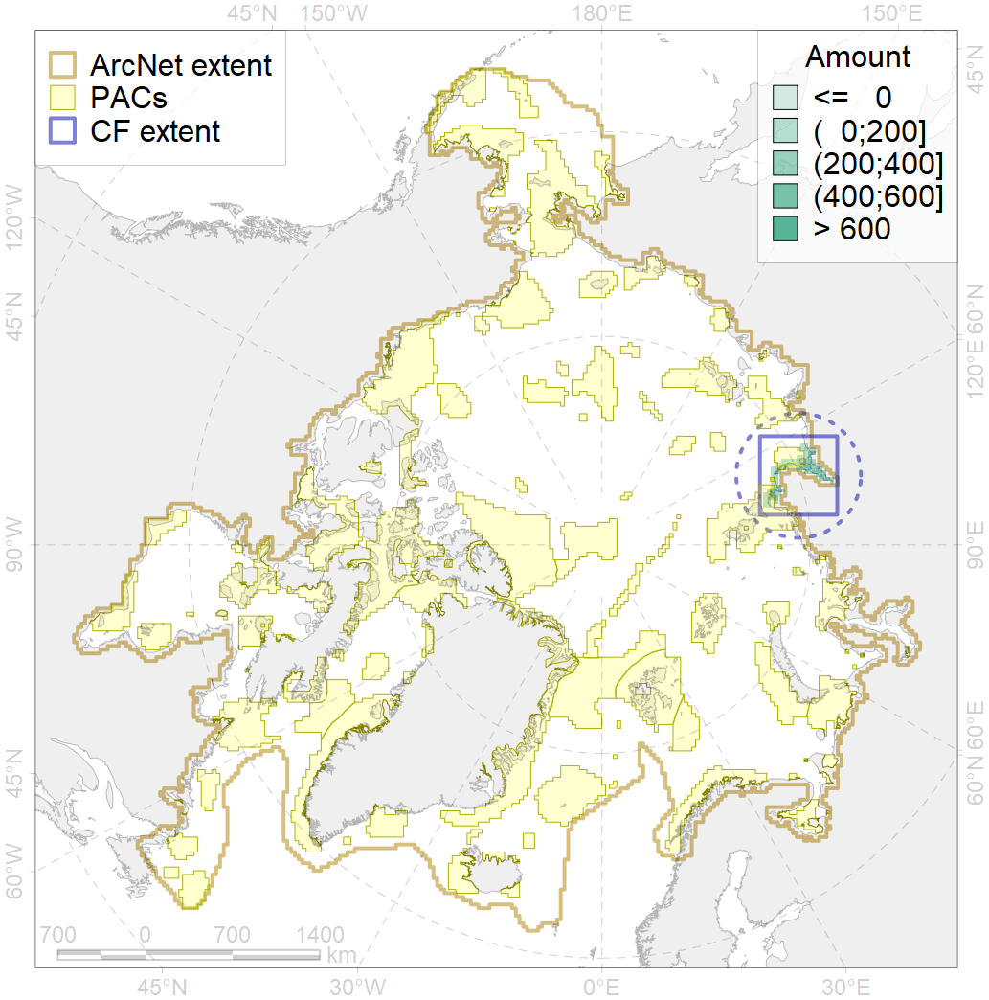
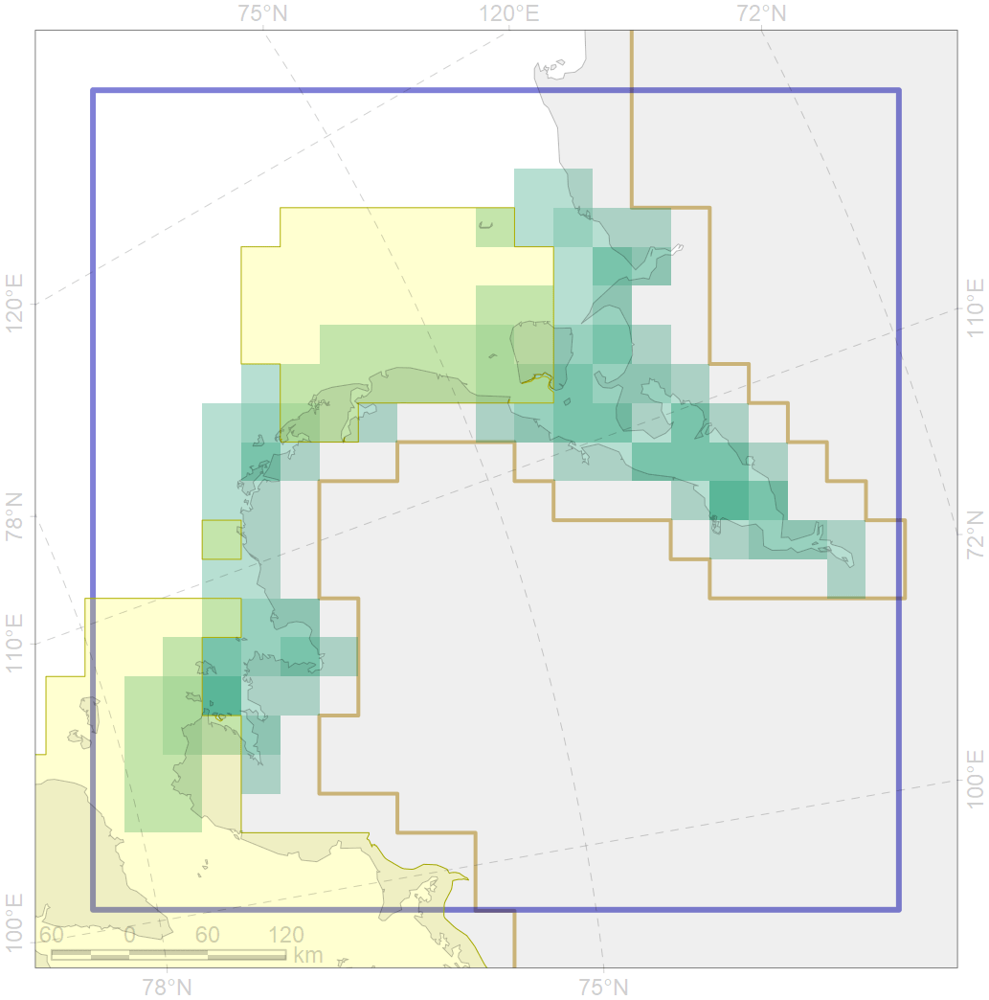

3009

| CF code | 3009 |
| CF name | Fast ice distribution in the Western part of the Laptev Sea |
| Time Period | 2009 - 2018 |
| Source(s) | Merged ice charts |
| Seasonality | 01 November - 31 July; year of census is for January |
| Depth Horizon | Sea level (0m) |
| Methodology | Processing of ice charts |
| Use Restrictions | Joined terms of data licenses, copyrights, restrictions, terms of use, disclaimers, etc. N…1 |
| Author Name | Nikita Platonov |
| Notes | |
| Scenario’s Target | 0.06 |
| Target Achievement | 0.227 (Scenario: 377.7%) |
| PAC | Share of the Total Amount within the PAC | Share of the Target Achievement for the ArcNet | PAC’s Contribution to the Target Achievement |
|---|---|---|---|
| 13 | 10.8%10.9% | 165.6%166.7% | 43.8%44.1% |
| 14 | 7.5%7.5% | 104.0%104.1% | 27.5%27.6% |
| inner | 18.3%18.5% | 269.6%270.8% | 71.4%71.7% |
| outer | 81.7%90.1% | 108.1%225.7% | 28.6%59.8% |
| † supplement values are for area consistence whereas principal values are for Accenter compatible gridded stats |